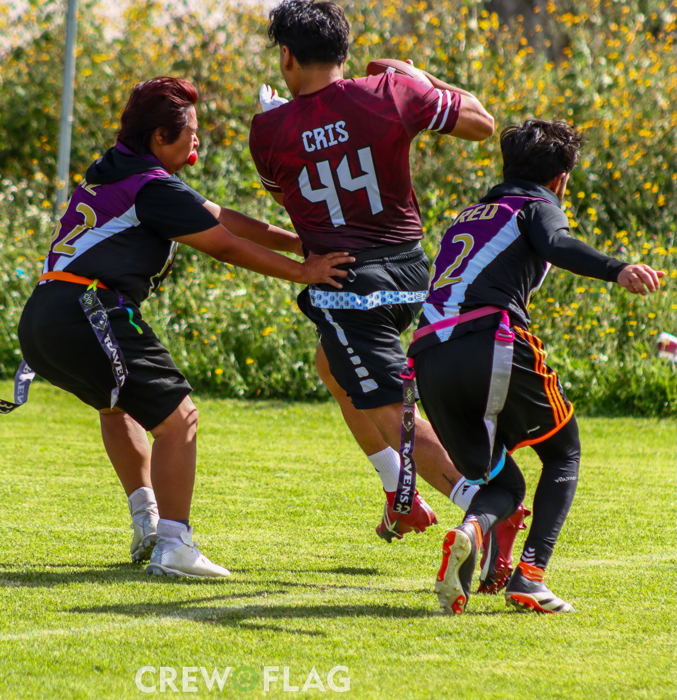
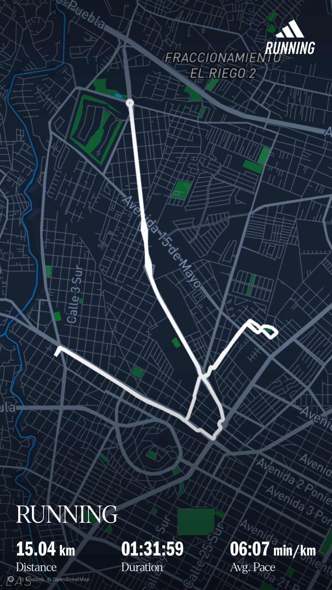

Gym

Flag Football

Running
Mis Actividades Favoritas
Entrenamiento de Gimnasio
Dedico 3-4 días por semana al entrenamiento de fuerza desde hace 3 años, esto me ha permitido crear y lograr diferentes metas personales a lo largo de los años.
Flag Football
Juego principalmente como receptor y defensa. Este deporte me ha permitido desarrollar habilidades de trabajo en equipo y estrategia, además de mantenerme activo de forma divertida.
Running
Me apasiona correr como forma de mantenerme en forma y salir al aire libre, suelo correr 15km semanales.
Otros intereses
Además de las actividades físicas, disfruto de la fotografía y los videojuegos. Estos hobbies me ayudan a mantener un equilibrio entre la actividad física y mental en mi tiempo libre.